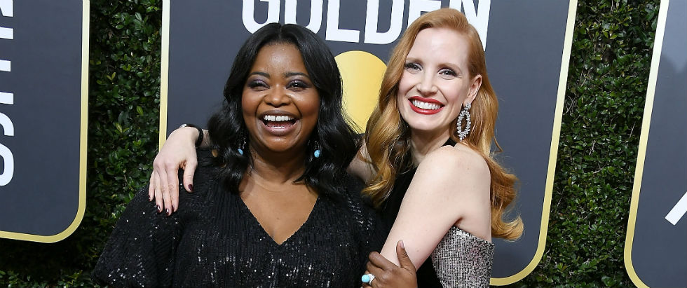

Em 1929, a Academia de Artes e Ciências Cinematográficas fundou o Oscar,
que viria a ser conhecido como a mais famosa premiação do cinema. Já na
década de 1980, surge o Framboesa de Ouro, no original Golden Raspberry
Awards, apelidado Razzies. Criado como uma brincadeira debochada, o anti
-Oscar homenageia os piores do ano cinematográfico.
E como já virou tradição, no dia anterior ao anúncio dos indicados ao prê
mio da Academia, são revelados os concorrentes do Framboesa de Ouro, "cele
brando" o que há de pior no cinema! Este ano, é a vez de Melissa McCarthy,
indicada ao Oscar pela sua performance em Poderia Me Perdoar? — um dia após
anunciada como uma das competidoras ao troféu de Pior Atriz por Crimes em
Happytime. No Razzies, ela disputa contra Jennifer Garner (A Justiceira),
Amber Heard (London Fields), Helen Mirren (A Maldição da Casa Winchester)
e Amanda Seyfried (Espectador Profissional).

Octavia Spencer e Jessica Chastain se conheceram nas audições de Histórias
Cruzadas e, desde então, se tornaram unha e carne. As duas atrizes estão sem
pre se exaltando nas redes sociais, e cada vez que se encontram nas tempora
das de premiações, fazem questão de demonstrar apoio uma a outra — inclusive
quando estavam concorrendo nas mesmas categorias em 2012. Chastain, perceben
do que sua amiga ganhava menos na indústria por ser negra, inclusive fez uma
campanha em 2017 para que as mulheres tivessem equiparação salarial em Hollywood.